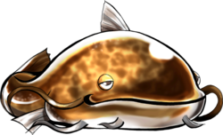

- Welcome to Touhou Wiki!
- Please register to edit. For assistance, check in with our Discord server or IRC channel.
Master Big Catfish
Master Big Catfish Master Giant Catfish (大ナマズ様), Big Catfish, Great Catfish, Supreme Catfish, Namazu | |
|---|---|
|
 Sprite of the Giant Catfish in Touhou Hisoutensoku
| |
| Species | |
| Abilities |
Causing earthquakes [1], Impersonation/Shape-Shifting? |
| Occupation |
Character in Meiling's dream |
| Relationships |
|
Appearances | |
| Official Games | |
| |
The Master Big Catfish (大ナマズ様 Oo Namazu-sama) is a villainous avatar of Taisui Xingjun, a God of Calamity who sent assassins (disguised as familiar characters) to attack Hong Meiling in her dreams. Its objective, as it claims, was to drain her of her power so that it could move the Earth and return to this world once again. It also spoke quite strongly of its plans to cause various disasters to Gensokyo. ZUN and Twilight Frontier has left no official comment about the catfish and its gender is unknown.
Character Basis[edit]
Origin[edit]
According to NKZ's comment in the Nae Raji (radio broadcasting by D.N.A. Softwares) on September 21. 2009., the inspiration of the catfish is the Golden Statue of Catfish at Yoshikawa City in Saitama Prefecture, where is NKZ's hometown.[2] [Ref. Needed]
While namazu means all catfish in general, it is likely based on Silurus asotus commonly known as either namazu or chinese catfish.[3]
In an interview with ZUN it was stated that originally, the catfish was planned for Scarlet Weather Rhapsody as the final boss. However, the final boss eventually became Tenshi Hinanawi.
Name[edit]
This character once referred to itself as the Giant Catfish (大ナマズ), but it doesn't mean it's this catfish's official name. "Catfish" (ナマズ namazu) refers to its species. In addition to this, The graphics files for the catfish are named "namazu" in the Touhou Hisoutensoku application directory, extending the prove of its species.
The oo (大, also dai) has many synonyms when translated to English, such as "giant", "large", "vast", "huge" or simply "big". The catfish additionally adds the honorific -sama (様, lit, "sir" or "madam"), a very formal gender-neutral suffix that's only used in high respect, referencing the fact that the catfish is referring to itself as high and mighty.
Design[edit]
The sprite of the catfish in Touhou Hisoutensoku shows that it has glossy, yellowish-brown flesh, bulbous eyes, single protruding dorsal fin, and whiskers.
Story[edit]
- Touhou Hisoutensoku
The catfish's main goal is to send assassins to Hong Meiling to drain her power, which are pseudo-characters of Alice Margatroid, Marisa Kirisame and Reimu Hakurei respectively. However, they were defeated, so the catfish reveals it to Meiling and claims it want to cause various disasters to Gensokyo; it was up to Meiling to stop the catfish. After a harsh battle, the catfish was defeated, but it was later revealed it was all a dream.
- Antinomy of Common Flowers
A visually identical but proportionally smaller catfish appears in a spellcard used by Tenshi Hinanawi from the Dream World. Althought the spellcard's catfish could be a different one.
Spell Cards[edit]
The naming of the spell cards are considered rather childish and that they don't truly appear to reflect the rules of spell cards due to being rather meaningless attacks. They mostly involve the catfish causing various earthquakes and using danmaku at a minimum. On some view, they can be considered "non-canon" in terms of story due to only being used in Meiling's dream.
| Name | Translated | Comments | Games | Stage | ||
|---|---|---|---|---|---|---|
| Total: 5 | ||||||
| ナマズ「ほらほら世界が震えるぞ？」 | Catfish "See? The World is Shaking!" | Soku | Story | |||
| ナマズ「液状化現象で大地も泥のようじゃ！」 | Catfish "The Earth Liquefies into Mud!" | Soku | Story | |||
| ナマズ「発電だって頑張っちゃうぞ？」 | Catfish "I'm Charging Up!" | Soku | Story | |||
| ナマズ「オール電化でエコロジーじゃ！」 | Catfish "All-Electrical for Ecology!" | Soku | Story | |||
| 大ナマズ「これで浮き世もおしまいじゃあ！」 | Great Catfish "With This Ends the Fleeting World!" | Soku | Story | |||
Additional Information[edit]
- Carp-like monster fish up to ten fathoms in length have been seen in the Misty Lake where the Scarlet Devil Mansion is located.[4] This may be the kind of fish Sakuya Izayoi caught at the end of Scarlet Weather Rhapsody.
- The catfish is one of the very few characters who has objectives that are truly antagonistic towards Gensokyo.
- Some of the attacks of the catfish are a reference to the attacks of Fatty Whale from Kirby Super Star and Kirby Super Star Ultra.
- The catfish is the only character who appears as a boss in a fighting spin-off, but is not a playable character.
- He is the only character in Touhou Hisoutensoku whose face is not visible in his HUD portrait.
Fandom[edit]
Official Sources[edit]
- 2009/08/15 Touhou Hisoutensoku - Meiling's scenario final stage
References[edit]
- ↑ "Catfish and Earthquakes in Folklore and Fact". Unknown parameter
|accesdate=ignored (|access-date=suggested) (help) - ↑ "吉川市ってどんな街？". Retrieved 23 August 2011.
- ↑ "Silurus asotus • Siluridae • Cat-eLog • PlanetCatfish • PlanetCatfish.com". Retrieved 19 December 2011.
- ↑ Perfect Memento in Strict Sense: Mystic Lake
| This page is part of Project Characters, a Touhou Wiki project that aims to write proper descriptions for all official characters of Touhou Project. Please keep the character page guidelines in mind when contributing. |